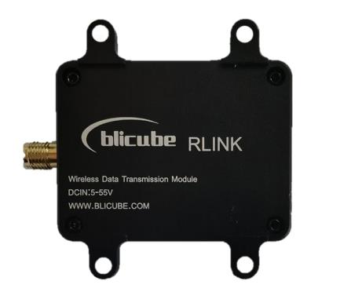

[copywiki destination=”plane,copter,rover,blimp”]¶
Blicube RLINK¶
RLINK is a long-distance wireless data link communication module developed by blicube.LLC, supporting Point to Point and Point to Multipoint. Using two RLINK modules to form a pair of data links for mutual communication, when one connected to the device end and the other connected to the computer end. With three or more RLINK modules, it can be used for Point to Multipoint.
Based on built-in P900 module, RLINK has the characteristics of high transmission power, high link rate, high receiving sensitivity, etc. The ground-to-air communication distance is up to 30+KM, the transmitting power can reach 1W , besides the module supports wide voltage input (5～55V) and high-speed frequency hopping. The module has the operating temperature range of -40 to 80 degrees, with shell of CNC aviation aluminum alloy materials.
Specifications¶
Item |
Specification |
|---|---|
Frequency |
902-928MHz |
Spreading Method |
Frequency Hopping |
Encryption |
Optional(see –AES option) |
Range |
Up to 60 KM(in theory) |
Forward Error Detection |
Hamming/ BCH/ Golay/ Reed-Solomon |
Error Detection |
32 bits of CRC, ARQ |
Output Power |
100mW-1W（20-30dBm） |
Serial Interface |
3.3V TTL |
Baud Rate |
57600（default & changeable） |
Link Rate |
57.6 – 276 kbps |
Sensitivity (@10^-4) |
114 dBm @ 57.6 kbps |
112 dBm @ 115.2 kbps |
|
109 dBm @ 172.8 kbps |
|
107 dBm @ 230.4 kbps |
|
Blocking |
+/- 1 MHz > 55 dBc |
+/- 2.5 MHz > 60 dBc |
|
+/- 5 MHz > 65 dBc |
|
> 930 MHz > 70 dBc |
|
< 890 MHz > 70 dBc |
|
Supply Voltage |
5～55v |
Antenna Interface |
SMA |
Size |
50mm * 38mm * 14mm |
Weight |
39g |